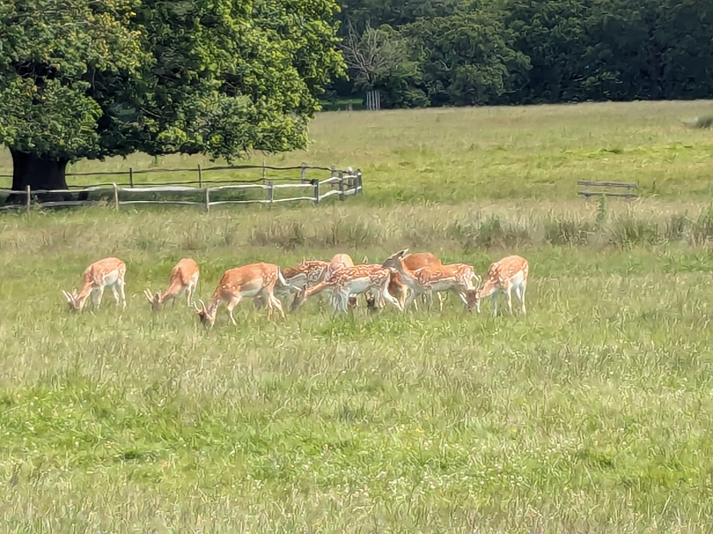

19 / 20
❮
❯

At Richmond Park, London area Henry VIII once hunted this lineage of deer on royal hunting trips (excite!)

19 / 20
❮
❯
AtRichmond Park, London areaHenry VIII once hunted this lineage of deer on royal hunting trips (excite!)